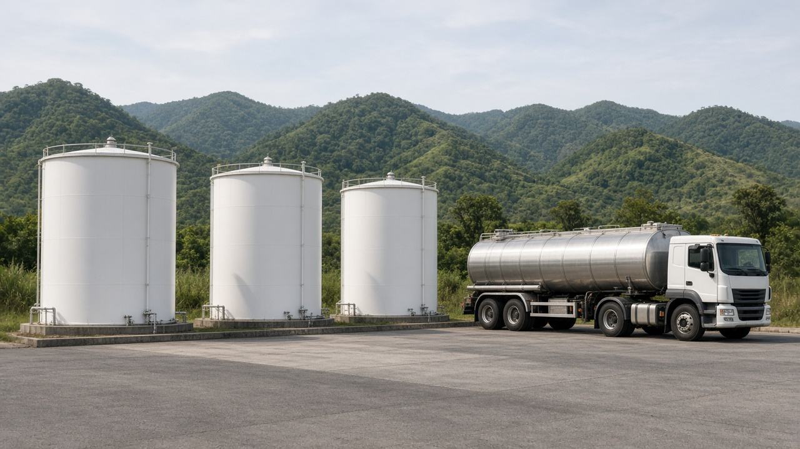

Environmental Taxes and Green Fiscal Reform
Published on August 20, 2026

Environmental taxes charge a fee on a damaging activity—fuel carbon content, landfill waste, plastic bags, congestion, or nutrient surplus—so private cost moves closer to social cost. Pigouvian logic says the rate should equal marginal external damage at the efficient quantity, but in practice rates are set by politics, measurement limits, and revenue needs. Green fiscal reform goes further: it shifts the tax base from labor and productive investment toward pollution and resource rents, aiming for a double dividend of cleaner outcomes and a less distorting tax system. Existing fuel, vehicle, and landfill charges are often the raw material for such a shift rather than a brand-new levy.
Revenue use decides who wins. Returning proceeds as lower income or payroll taxes, or as equal per-person transfers, can protect low-income households who spend a larger share on energy and food. Earmarking for environmental funds is popular but can lock money into low-value projects if the fund is captured. Exemptions for politically powerful sectors undo the incentive and shift the burden onto households and small firms. Indexing rates to inflation and tightening them on a published schedule prevents silent erosion of the signal after the first budget speech.
Implementation requires a tax administration that can measure the base, limit evasion, and coordinate with customs and energy regulators. South Asian fuel and vehicle taxes already exist; greening them means aligning rates with carbon and local damage rather than only with short-term fiscal gaps. Complementary measures—lifeline electricity blocks, public transit, and targeted support for cleaner household fuels—address equity without zeroing the price signal. A credible package is announced as a multi-year fiscal path, audited like any other tax, and explained in the language of fairness, not only of efficiency.
वातावरणीय करले हानिकारक क्रियाकलापमा शुल्क लगाउँछ—इन्धनको कार्बन अंश, फोहोर थुपार्ने स्थल, प्लास्टिक झोला, जाम वा पोषक तत्व अधिकता—ताकि निजी लागत सामाजिक लागत नजिक जाओस्। बाह्य लागत कर तर्क भन्छ दर कुशल परिमाणमा सीमान्त बाह्य हानिसँग बराबर हुनुपर्छ, तर व्यवहारमा दर राजनीति, मापन सीमा र राजस्व आवश्यकताले तय हुन्छ। हरित राजस्व सुधार अझ अघि जान्छ: कर आधार श्रम र उत्पादक लगानीबाट प्रदूषण र स्रोत भाडातर्फ सार्छ, सफा नतिजा र कम विकृत कर प्रणालीको दोहोरो लाभांश खोज्दै। विद्यमान इन्धन, सवारी र फोहोर शुल्क प्रायः यस्तो स्थानान्तरणको कच्चा पदार्थ हुन्, बिलकुल नयाँ कर मात्र होइनन्।
राजस्व प्रयोगले कसले जित्छ भन्ने तय गर्छ। आय वा तलब कर घटाएर वा प्रति व्यक्ति बराबर रकमान्तर गरेर ऊर्जा र खाद्यान्नमा ठूलो अंश खर्च गर्ने न्यून आय घरलाई जोगाउन सकिन्छ। वातावरण कोषमा छुट्याउने चलन लोकप्रिय छ तर कोष कब्जा भयो भने कम मूल्यका आयोजनामा पैसा थुनिन सक्छ। राजनीतिक शक्तिशाली क्षेत्रलाई छुट दिँदा प्रोत्साहन बिग्रन्छ र भार घरपरिवार तथा साना फर्ममा सर्छ। मुद्रास्फीतिसँग दर अनुक्रमण र प्रकाशित तालिकामा कस्दा पहिलो बजेट भाषणपछि संकेत चुपचाप क्षय हुनबाट रोकिन्छ।
कार्यान्वयनलाई आधार नाप्न, चुहावट रोक्न र भन्सार तथा ऊर्जा नियामकसँग समन्वय गर्न सक्ने कर प्रशासन चाहिन्छ। दक्षिण एसियाली इन्धन र सवारी कर पहिले नै छन्; हरित बनाउनु भनेको दरलाई छोटो अवधिको राजस्व खाडल मात्र होइन कार्बन र स्थानीय हानिसँग मिलाउनु हो। जीवनरेखा बिजुली खण्ड, सार्वजनिक यातायात र सफा घरायसी इन्धनको लक्षित सहयोगले मूल्य संकेत शून्य नगरी समानता सम्बोधन गर्छ। विश्वसनीय कर पुलिन्दा बहुवर्षीय राजस्व बाटोका रूपमा घोषणा हुन्छ, अरू करजस्तै लेखा परीक्षण हुन्छ र दक्षता मात्र होइन न्यायको भाषामा बुझाइन्छ।
पर्यावरण कर हानिकारक गतिविधि पर शुल्क लगाते हैं—ईंधन की कार्बन मात्रा, कचरा ढेर स्थल, प्लास्टिक थैला, जाम या पोषक अधिकता—ताकि निजी लागत सामाजिक लागत के निकट आए। बाह्य लागत कर तर्क कहता है दर कुशल मात्रा पर सीमांत बाहरी हानि के बराबर हो, पर व्यवहार में दर राजनीति, माप सीमा और राजस्व जरूरत तय करती है। हरित राजकोषीय सुधार आगे जाता है: कर आधार श्रम और उत्पादक निवेश से प्रदूषण तथा संसाधन भाड़े की ओर सरकाता है, स्वच्छ परिणाम और कम विकृत कर प्रणाली का दोहरा लाभांश खोजते हुए। विद्यमान ईंधन, वाहन और कचरा शुल्क अक्सर ऐसे सरकाव का कच्चा माल होते हैं, केवल बिल्कुल नया कर नहीं।
राजस्व उपयोग तय करता है कौन जीतता है। आय या वेतन कर घटाकर या प्रति व्यक्ति बराबर अंतरण से ऊर्जा और भोजन पर बड़ा अंश खर्च करने वाले निम्न आय परिवार बच सकते हैं। पर्यावरण कोष में चिह्नित करना लोकप्रिय है, पर कोष कब्जा हो तो कम मूल्य की परियोजनाओं में धन रुक सकता है। राजनीतिक रूप से शक्तिशाली क्षेत्रों को छूट देने से प्रोत्साहन बिगड़ता है और भार परिवारों तथा छोटी फर्मों पर सरकता है। मुद्रास्फीति से दर अनुक्रमित करना और प्रकाशित अनुसूची पर कसना पहले बजट भाषण के बाद संकेत के चुप क्षय को रोकता है।
कार्यान्वयन को आधार मापने, चोरी सीमित करने और सीमा शुल्क तथा ऊर्जा नियामकों से समन्वय करने वाला कर प्रशासन चाहिए। दक्षिण एशियाई ईंधन और वाहन कर पहले से हैं; उन्हें हरित बनाना दरों को केवल अल्पकालिक राजकोषीय अंतर से नहीं कार्बन और स्थानीय हानि से मिलाना है। जीवनरेखा बिजली खंड, सार्वजनिक परिवहन और स्वच्छ घरेलू ईंधन का लक्षित सहयोग मूल्य संकेत शून्य किए बिना समता संबोधित करते हैं। विश्वसनीय कर पुलिंदा बहुवर्षीय राजकोषीय पथ के रूप में घोषित होता है, अन्य करों जैसा लेखा परीक्षित होता है और केवल दक्षता नहीं न्याय की भाषा में समझाया जाता है।